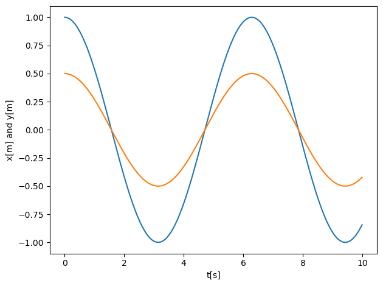

PHY321: Classical Mechanics 1#
Homework 8, due Friday March 31
Date: Mar 27, 2023
Practicalities about homeworks and projects#
You can work in groups (optimal groups are often 2-3 people) or by yourself. If you work as a group you can hand in one answer only if you wish. Remember to write your name(s)!
Homeworks are available the week before the deadline.
How do I(we) hand in? Due to the corona virus and many of you not being on campus, we recommend that you scan your handwritten notes and upload them to D2L. If you are ok with typing mathematical formulae using say Latex, you can hand in everything as a single jupyter notebook at D2L. The numerical exercise(s) should always be handed in as a jupyter notebook by the deadline at D2L.
Introduction to homework 8#
This week’s sets of classical pen and paper and computational exercises are tailored to the topic of two-body problems and central forces. It follows what was discussed during the lectures during week 12 (March 20-24) and week 12 (March 27-31).
The relevant reading background is
Sections 8.1-8.7 of Taylor.
Lecture notes on two-body problems, central forces and gravity.
For the addition exercise (optional), see Julie Butler’s notes
Exercise 1 (10pt), Equations of motion and more#
The equations of motion in the center-of-mass frame in two dimensions with \(x=r\cos{(\phi)}\) and \(y=r\sin{(\phi)}\) and \(r\in [0,\infty)\), \(\phi\in [0,2\pi]\) and \(r=\sqrt{x^2+y^2}\) are given by
and
Here \(V(r)\) is any central force which depends only on the relative coordinate.
1a (5pt) Show that you can rewrite the radial equation in terms of an effective potential \(V_{\mathrm{eff}}(r)=V(r)+L^2/(2\mu r^2)\).
1b (5pt) Write out the final differential equation for the radial degrees of freedom when we specify that \(V(r)=-\alpha/r\). Plot the effective potential. You can choose values for \(\alpha\) and \(L\) and discuss (see Taylor section 8.4 and example 8.2) the physics of the system for two energies, one larger than zero and one smaller than zero. This is similar to what you did in the first midterm, except that the potential is different.
Exercise 2 (40pt), Harmonic oscillator again#
See the lecture notes on central forces for a discussion of this problem. It is given as an example in the lecture notes (slides from March 20-24) and the lecture text at https://mhjensen.github.io/Physics321/doc/LectureNotes/_build/html/chapter6.html#effective-or-centrifugal-potential.
Consider a particle of mass \(m\) in a \(2\)-dimensional harmonic oscillator with potential
We assume the orbit has a final non-zero angular momentum \(L\). The effective potential looks like that of a harmonic oscillator for large \(r\), but for small \(r\), the centrifugal potential repels the particle from the origin. The combination of the two potentials has a minimum for at some radius \(r_{\rm min}\).
2a (10pt) Set up the effective potential and plot it. Find \(r_{\rm min}\) and \(\dot{\phi}\). Show that the latter is given by \(\dot{\phi}=\sqrt{k/m}\). At \(r_{\rm min}\) the particle does not accelerate and \(r\) stays constant and the motion is circular. With fixed \(k\) and \(m\), which parameter can we adjust to change the value of \(r\) at \(r_{\rm min}\)?
2b (10pt) Now consider small vibrations about \(r_{\rm min}\). The effective spring constant is the curvature of the effective potential. Use the curvature at \(r_{\rm min}\) to find the effective spring constant (hint, look at exercise 4 in homework 6) \(k_{\mathrm{eff}}\). Show also that \(\omega=\sqrt{k_{\mathrm{eff}}/m}=2\dot{\phi}\)
2c (10pt) The solution to the equations of motion in Cartesian coordinates is simple. The \(x\) and \(y\) equations of motion separate, and we have \(\ddot{x}=-kx/m\) and \(\ddot{y}=-ky/m\). The harmonic oscillator is indeed a system where the degrees of freedom separate and we can find analytical solutions. Define a natural frequency \(\omega_0=\sqrt{k/m}\) and show that (where \(A\), \(B\), \(C\) and \(D\) are arbitrary constants defined by the initial conditions)
2d (10pt) With the solutions for \(x\) and \(y\), and \(r^2=x^2+y^2\) and the definitions \(\alpha=\frac{A^2+B^2+C^2+D^2}{2}\), \(\beta=\frac{A^2-B^2+C^2-D^2}{2}\) and \(\gamma=AB+CD\), show that
with
Exercise 3 (40pt), Numerical Solution of the Harmonic Oscillator#
Using the code we developed in homework 5 or the first midterm (part b), we can solve the above harmonic oscillator problem in two dimensions using our code from this homework. We need however to change the acceleration from the gravitational force to the one given by the harmonic oscillator potential.
The code is given here for the Velocity-Verlet algorithm, with obvious elements to fill in.
%matplotlib inline
# Common imports
import numpy as np
import pandas as pd
from math import *
import matplotlib.pyplot as plt
import os
# Where to save the figures and data files
PROJECT_ROOT_DIR = "Results"
FIGURE_ID = "Results/FigureFiles"
DATA_ID = "DataFiles/"
if not os.path.exists(PROJECT_ROOT_DIR):
os.mkdir(PROJECT_ROOT_DIR)
if not os.path.exists(FIGURE_ID):
os.makedirs(FIGURE_ID)
if not os.path.exists(DATA_ID):
os.makedirs(DATA_ID)
def image_path(fig_id):
return os.path.join(FIGURE_ID, fig_id)
def data_path(dat_id):
return os.path.join(DATA_ID, dat_id)
def save_fig(fig_id):
plt.savefig(image_path(fig_id) + ".png", format='png')
DeltaT = 0.01
#set up arrays
tfinal = 10.0
n = ceil(tfinal/DeltaT)
# set up arrays for t, a, v, and x
t = np.zeros(n)
v = np.zeros((n,2))
r = np.zeros((n,2))
# Initial conditions as compact 2-dimensional arrays
r0 = np.array([1.0,0.5]) # You need to change these to fit rmin
v0 = np.array([0.0,0.0]) # You need to change these to fit rmin
r[0] = r0
v[0] = v0
k = 1.0 # spring constant
m = 1.0 # mass, you can change these
omega02 = k/m
# Start integrating using the Velocity-Verlet method
for i in range(n-1):
# Set up forces, define acceleration first
a = -r[i]*omega02 # you may need to change this
# update velocity, time and position using the Velocity-Verlet method
r[i+1] = r[i] + DeltaT*v[i]+0.5*(DeltaT**2)*a
# new accelerationfor the Verlet method
anew = -r[i+1]*omega02
v[i+1] = v[i] + 0.5*DeltaT*(a+anew)
t[i+1] = t[i] + DeltaT
# Plot position as function of time
fig, ax = plt.subplots()
ax.set_xlabel('t[s]')
ax.set_ylabel('x[m] and y[m]')
ax.plot(t,r[:,0])
ax.plot(t,r[:,1])
fig.tight_layout()
save_fig("2DimHOVV")
plt.show()

3a (20pt) Use for example the above code to set up the acceleration and use the initial conditions fixed by for example \(r_{\rm min}\) from exercise 2. Which value should the initial velocity take if you place yourself at \(r_{\rm min}\) and you require a circular motion? Hint: see the first midterm, part 2. There you used the centripetal acceleration.
Instead of solving the equations in the cartesian frame we will now rewrite the above code in terms of the radial degrees of freedom only. Our differential equation is now
and
3b (20pt) We will use \(r_{\rm min}\) to fix a value of \(L\), as seen in exercise 2. This fixes also \(\dot{\phi}\). Write a code which now implements the radial equation for \(r\) using the same \(r_{\rm min}\) as you did in 3a. Compare the results with those from 3a with the same initial conditions. Do they agree? Use only one set of initial conditions.
Exercise 4, equations for an ellipse (10pt)#
Consider an ellipse defined by the sum of the distances from the two foci being \(2D\), which expressed in a Cartesian coordinates with the middle of the ellipse being at the origin becomes
Here the two foci are at \((a,0)\) and \((-a,0)\). Show that this form is can be written as
Bonus exercise, from Julie Butler’s notes#
This bonus exercise gives you an additional score of 20pt.
Make a class called Solvers which contains the following:
An initializer
A method that implements Euler’s method in 2D
A method that implements Euler-Cromer’s method in 2D
A method that implements Velocity-Verlet in 2D
A method that plots position versus time results from the solver
oAt least three class level variables
The class may also contain any other methods or class level variables that you think are needed.
Make then a function (outside of the class Solver) that solves the Earth-Sun problem using the Solvers class (Exercise 6 from Homework 5).
Classical Mechanics Extra Credit Assignment: Scientific Writing and attending Talks#
The following gives you an opportunity to earn five extra credit points on each of the remaining homeworks and ten extra credit points on the midterms and finals. This assignment also covers an aspect of the scientific process that is not taught in most undergraduate programs: scientific writing. Writing scientific reports is how scientist communicate their results to the rest of the field. Knowing how to assemble a well written scientific report will greatly benefit you in you upper level classes, in graduate school, and in the work place.
The full information on extra credits is found at mhjensen/Physics321. There you will also find examples on how to write a scientific article. Below you can also find a description on how to gain extra credits by attending scientific talks.
This assignment allows you to gain extra credit points by practicing your scientific writing. For each of the remaining homeworks you can submit the specified section of a scientific report (written about the numerical aspect of the homework) for five extra credit points on the assignment. For the two midterms and the final, submitting a full scientific report covering the numerical analysis problem will be worth ten extra points. For credit the grader must be able to tell that you put effort into the assignment (i.e. well written, well formatted, etc.). If you are unfamiliar with writing scientific reports, see the information here
The following table explains what aspect of a scientific report is due with which homework. You can submit the assignment in any format you like, in the same document as your homework, or in a different one. Remember to cite any external references you use and include a reference list. There are no length requirements, but make sure what you turn in is complete and through. If you have any questions, please contact us.
| HW/Project | Due Date | Extra Credit Assignment |
|---|---|---|
| HW 3 | 2-8 | Abstract |
| HW 4 | 2-15 | Introduction |
| HW 5 | 2-22 | Methods |
| HW 6 | 3-1 | Results and Discussion |
| **Midterm 1** | **3-12** | *Full Written Report* |
| HW 7 | 3-22 | Abstract |
| HW 8 | 3-29 | Introduction |
| HW 9 | 4-5 | Results and Discussion |
| **Midterm 2** | **4-16** | *Full Written Report* |
| HW 10 | 4-26 | Abstract |
| **Final** | **4-30** | *Full Written Report* |
You can also gain extra credits if you attend scientific talks. This is described here.
Integrating Classwork With Research#
This opportunity will allow you to earn up to 5 extra credit points on a Homework per week. These points can push you above 100% or help make up for missed exercises. In order to earn all points you must:
Attend an MSU research talk (recommended research oriented Clubs is provided below)
Summarize the talk using at least 150 words
Turn in the summary along with your Homework.
Approved talks: Talks given by researchers through the following clubs:
Research and Idea Sharing Enterprise (RAISE): Meets Wednesday Nights Society for Physics Students (SPS): Meets Monday Nights
Astronomy Club: Meets Monday Nights
Facility For Rare Isotope Beam (FRIB) Seminars: Occur multiple times a week
All the material on extra credits is at mhjensen/Physics321.